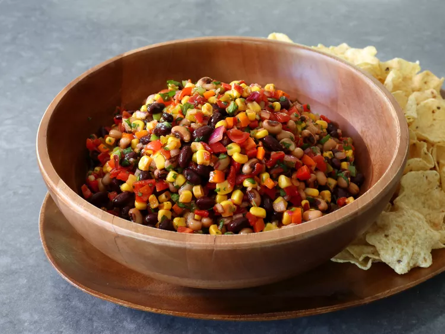

Ultimate Cowboy Caviar

Description
Chef John's crowd-pleasing cowboy caviar "is one of the greatest party dips of all time." This version uses 3 kinds of peppers—fresh, pickled, and roasted—and an easy custom dressing to take it to the next level.
Ingredients
Dressing
- 1/3 cup avocado oil or other vegetable oil
- 1/3 cup seasoned rice vinegar
- 1 lime, juiced
- 3 cloves garlic, minced
- 1/4 teaspoon garlic powder
- 1 1/2 teaspoons kosher salt, plus more to taste
- 1 teaspoon white sugar
- 1 1/4 teaspoons ground cumin
- 1 teaspoon smoked paprika
- 1/2 teaspoon chipotle pepper, or to taste
Caviar
- 2/3 cup finely diced red onion
- 1 1/2 cups diced fresh bell peppers
- 1/3 cup diced jarred roasted red peppers
- 1/3 cup diced pickled jalapeno peppers, or other pickled peppers
- 1 (15 ounce) can black beans, drained and rinsed
- 1 (15 ounce) can black eyed peas, drained and rinsed
- 2 cups frozen corn
- 1 cup diced fresh tomato
- 1/2 cup chopped fresh cilantro
- scoop-style tortilla chips for serving
Steps
- Whisk avocado oil, rice vinegar, lime juice, garlic, garlic powder, salt, sugar, cumin, paprika, and chipotle together in a large bowl and set aside until needed.
- Rinse diced onion well under cold water; drain well.
- Add bell peppers, roasted red peppers, jalapenos, black beans, black-eyed peas, corn, and tomato to the bowl of dressing. Add red onion, stir well, cover, and refrigerate for 2 to 12 hours, tossing occasionally.
- Before serving, stir in cilantro. Season to taste with salt. Serve with tortilla chips.